Activity: Feature Libraries
This activity demonstrates the definition and use of feature libraries. Create and place a frequently-used face set. In this activity you will:
-
Create a feature library.
-
Copy a feature to the new library.
-
Place the library member into two different part files.
Click here to download the activity file.
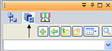
-
Open feature_library.par.
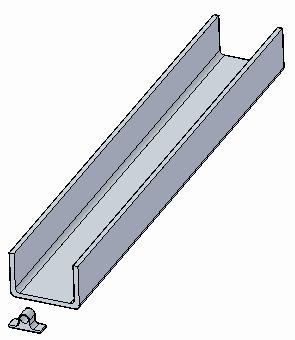
Select the Feature Library tab on the left edge of the application window, exposing the Feature Library pane.
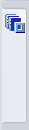
On the Look In list, change the view to the C: drive.
The C: drive contents will vary from those shown below.
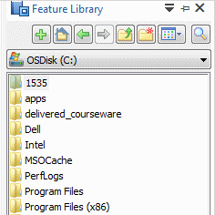
Click the Create New Folder button to create your own folder under the Local Disk (C:). You can type any folder name you wish.
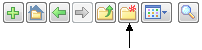
The focus automatically changes to the new folder.
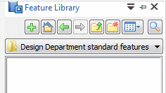
The folder name shown will vary from yours.
Select the Protrusion 8 face set, either directly or from PathFinder.
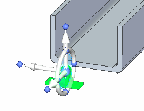
It is important to position the steering wheel on a feature that is being copied so that when it is pasted to a face, the copied feature has the correct orientation.
Use the following steps to position the steering wheel plane on the bottom face.
Click the steering wheel origin and drag it to an edge on the bottom face.
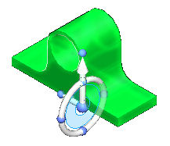
Hold the Shift key and click the torus plane. Continue clicking until you get the orientation shown.
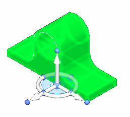
Right-click and choose Copy, or press Ctrl+C.
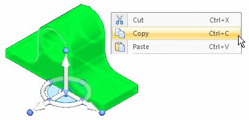
Select the Feature Library tab from the left hand edge of the application window.
It should still be set to the folder created earlier. Right-click in the white space towards the bottom and choose Paste.
The Feature Library Entry dialog box appears. Type cable_tie for the name, then click Save.
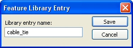
You now have a feature library member.
You can speed up member creation by selecting the desired face set and clicking the Add button on the Feature Library pane.
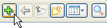
Since it is saved to a folder on your computer, this feature is now available to use again in this part file, as well as in other part files. You will do this in the following steps.
Select the cable_tie.par in the Feature Library and drag it into the model window. Notice the feature attaches to your cursor.
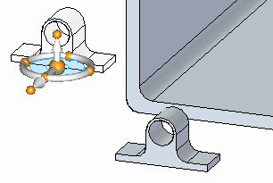
Place the bottom of the feature on the inside surface of the channel. When the surface highlights, press the F3 key to lock to that plane.
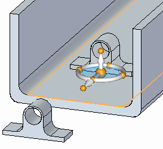
Left-click to place the cable tie.
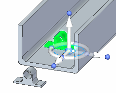
Left-click to end the command.
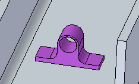
Place two more instances of the cable tie to get the feel for this process.
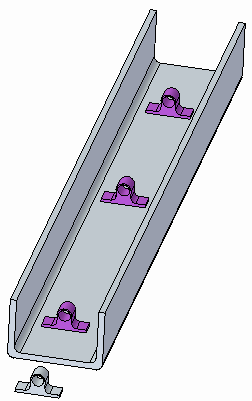
To add the feature to the model, select the feature in PathFinder. Right-click and choose Attach from the list.
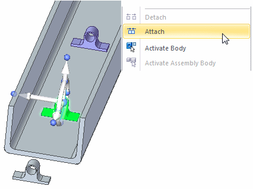
Select Add from the Attach dialog box.
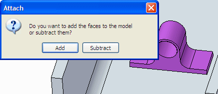
The construction body is now attached.
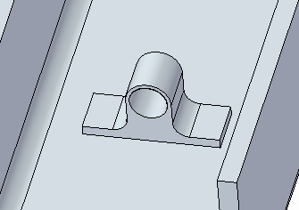
Repeat for all three features.
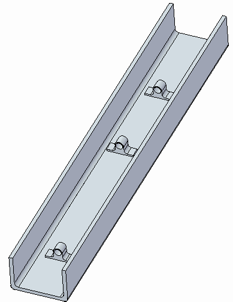
Select the first feature placed. Select it directly or in PathFinder.
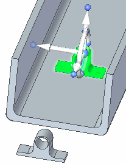
You will need to use QuickPick to select the feature directly. It is faster to select it from PathFinder.
Move steering wheel origin to the cylinder center.
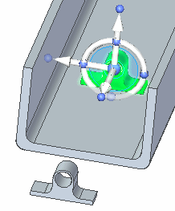
Click the move handle.
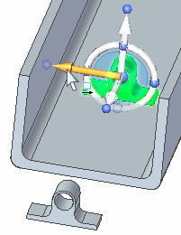
Move to the midpoint of the edge shown. Click when the midpoint symbol displays. If the midpoint does not display, select the midpoint option on the command bar.
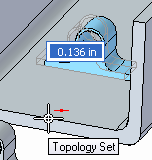
Left-click to end the Move command.
Place a dimension from the end face of channel to the face of the feature.
Choose the Distance Between command.
On command bar, click the Lock Dimension Plane option .
Select face shown.
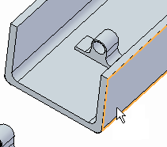
Place the following dimension.
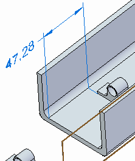
Click the Select tool and then select the feature in PathFinder.
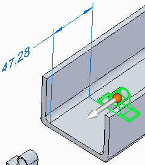
Click the dimension value. Make sure the direction is as shown. Lock the dimension.
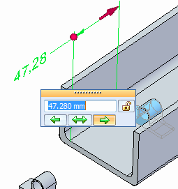
Type 75 in the dimension edit box and press Tab.
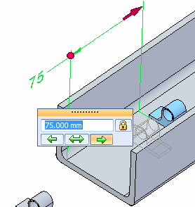
Left-click to end the move command.
Optional step: Center the two remaining features in the channel. Position the middle feature at the center of the channel length. Dimension feature on the other end 75 mm from channel end.
Save and close this file.
The feature is available to use in other part files.
Open the file feature_library2.par.
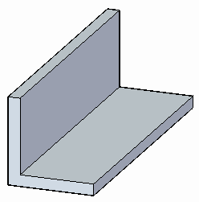
In the Feature Library tab, navigate to the folder you created earlier.
Select the cable_tie.par feature and drag it into the model window.
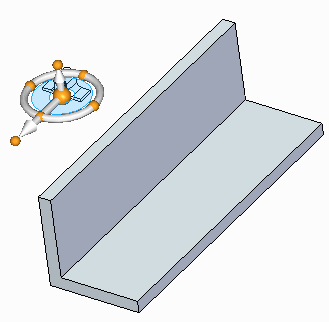
Highlight the face shown and press the F3 key to lock it. The feature flips. Left-click to place the tie.
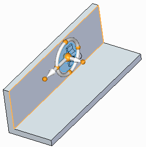
Save and close this file.
In this activity you learned how to create a feature library. You also learned how to add features to the library and how to place the feature into other files. Feature libraries are for storing common features that are used often in a company's design process.
-
Click the Close button in the upper-right corner of this activity window.